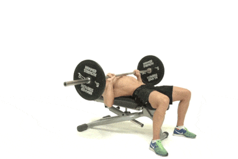
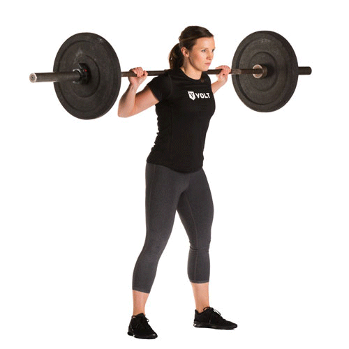

Trening siłowy
1. Czym jest trening siłowy?
Wiele osób zaczynających przygodę z siłownią żyje w mylnym przekonaniu, że trening siłowy służy jedynie do budowania masy mięśniowej. Ten sposób myślenia jest szczególnie popularny u kobiet, które w obawie przed pokaźną muskulaturą wybierają jedynie zajęcia fitness lub sesje cardio na bieżni. Postaram się obalić ten mit, przedstawiając wady i zalety związane z treningiem siłowym, ponieważ jest wiele fizycznych, zdrowotnych i mentalnych korzyści z dołączenia do swojego treningu sesji siłowych.
Poprawnie zaprogramowany trening siłowy będzie angażował całe nasze ciało. Możemy śmiało zaliczyć go do wysiłku beztlenowego, gdyż w większości przypadków treningi mają charakter interwałowy (pewien okres pracy przeplatany z okresami odpoczynku). To od nas zależy, z jaką intensywnością, objętością oraz częstotliwością będziemy go wykonywali, można w większym lub mniejszym stopniu zaangażować różne jednostki motoryczne w naszym organizmie. Warto również zaznaczyć, że jest to niesamowicie elastyczny rodzaj aktywności fizycznej. Mamy do wyboru ćwiczenia z ciężarem własnego ciała, trening z wykorzystaniem sztang/hantli czy kettli, a kończymy np. na treningu z użyciem maszyn (które akurat przynoszą tutaj najmniejsze korzyści).
Przykładowe ćwiczenia
1.Wyciskanie leżąc

2.Przysiady ze sztangą
